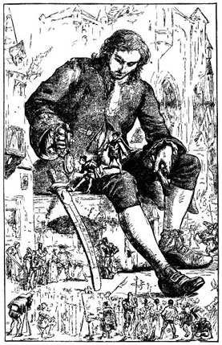

|
O trecho abaixo foi extraído do romance “Viagens de Gulliver”
do escritor irlandês Jonathan Swift (1667-1745):
|
“Haverá por bem observar o leitor que no último artigo do recobramento de minha
liberdade, o imperador estipula (que) me seja concedida uma quantidade de carne e bebidas
suficiente para o sustento de 1728 liliputianos. Algum tempo depois, perguntando a um
amigo meu da corte de que maneira haviam conseguido fixar precisamente este número,
respondeu-me ele que os matemáticos de Sua Majestade, havendo tomado a altura
do meu corpo por meio de um quadrante, e verificando que ela excede a dos deles na
proporção de doze para um, deduziram, da semelhança dos nossos corpos, que
o meu devia conter pelo menos 1728 dos deles, e exigir, conseguintemente, a quantidade
de alimentos necessária à sustentação de igual número de liliputianos. Pelo que pode o
leitor formar ideia do engenho desse povo, assim como da prudente e exata
economia de tão grande príncipe.”
Viagens de Gulliver, Jonathan Swift, Coleção Os Imortais da Literatura, Editora Abril, 1971.
Tradução: Octavio Mendes Cajado.
|
O cálculo do volume feito pelos matemáticos liliputianos está correto: se Gulliver é 12 vezes mais
alto do que um liliputiano, então o seu volume é 123 = 1728 vezes maior
(assumindo que Gulliver e os liliputianos são semelhantes).
Contudo, se o metabolismo dos liliputianos for igual ao metabolismo de Gulliver, não está correto
afirmar que, por ter um volume 1728 vezes maior, Gulliver tenha que receber 1728 vezes mais comida do
que um liliputiano receberia.
A energia fornecida pelos alimentos é majoritariamente transformada em calor e
a taxa de perda de calor é proporcional à área da superfície do corpo e não ao seu volume.
Note que a área da superfície do corpo de um liliputiano é 144 vezes menor do que a área da superfície do corpo de Gulliver, enquanto que
o calor gerado por seu corpo é 1728 vezes menor. Logo, ou a temperatura do corpo de
um liliputiano é muito menor (ele não teria sangue quente) ou
ele teria que comer mais (em comparação ao seu tamanho) para gerar mais energia
(como um camundongo que fica mordiscando constantemente).


Ilustrações do romance “Viagens de Gulliver” de Jonathan Swift no Projeto Gutenberg.
|